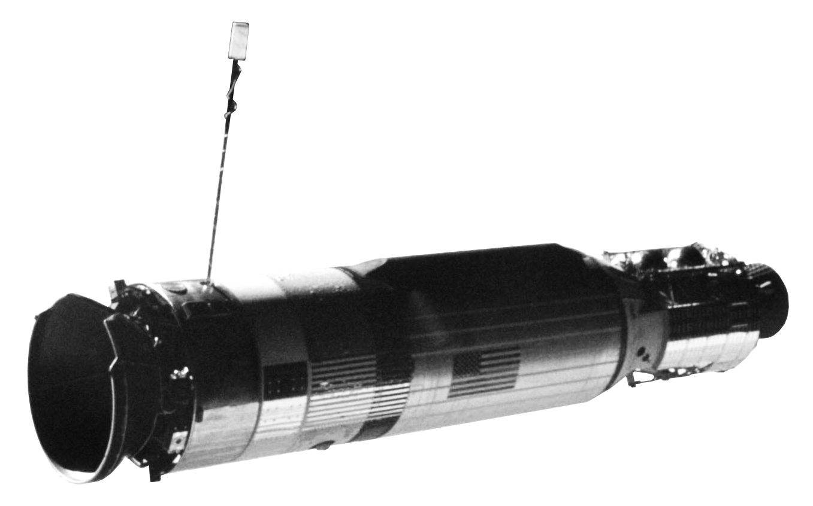
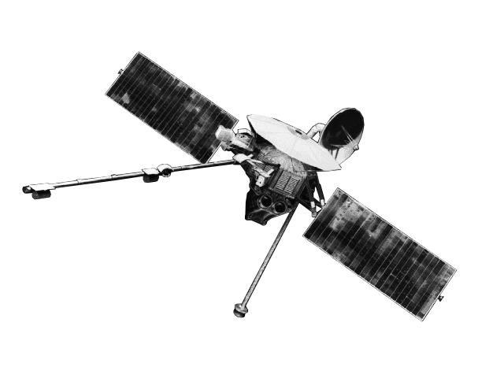
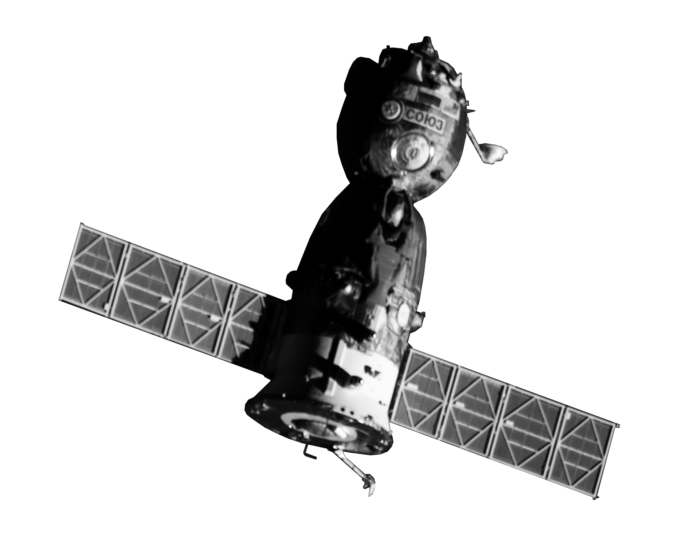
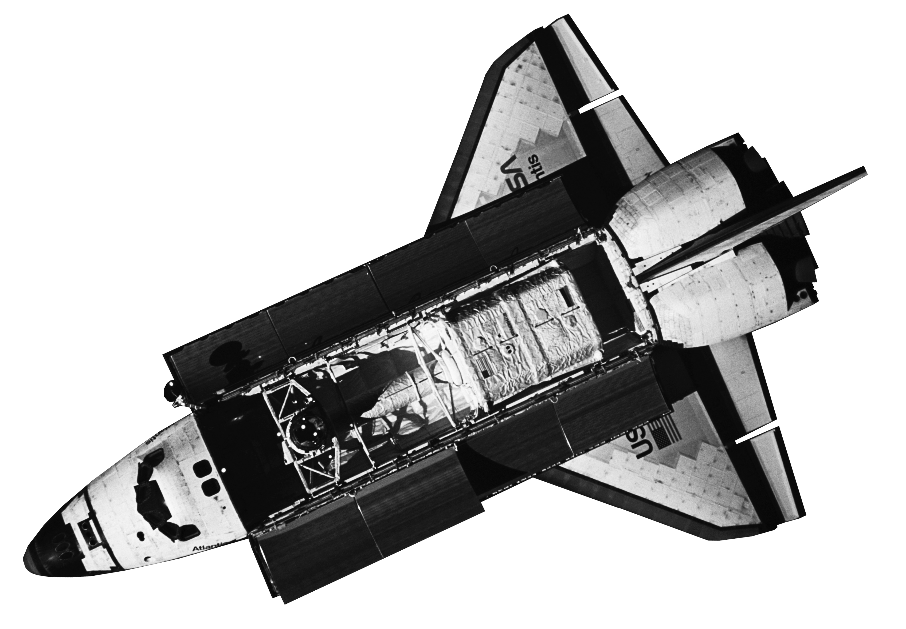
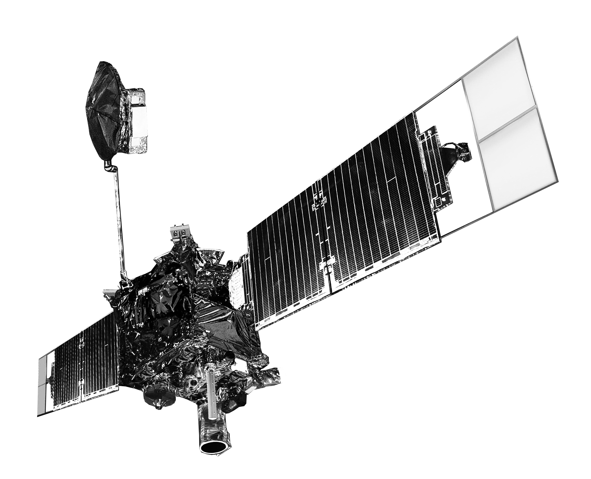
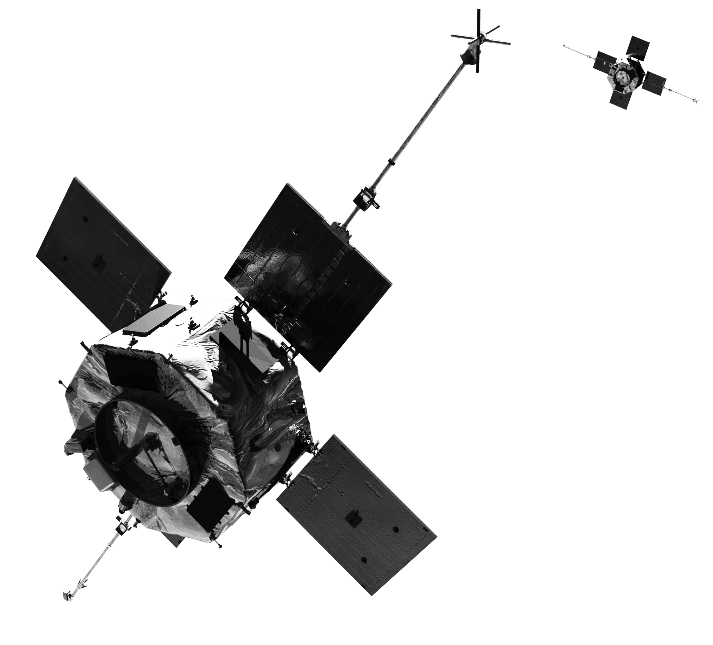
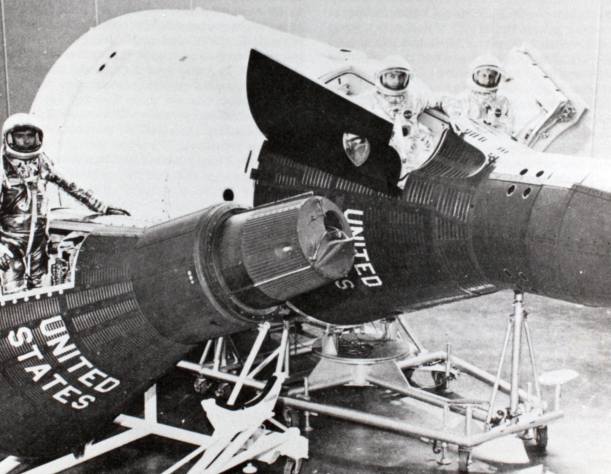
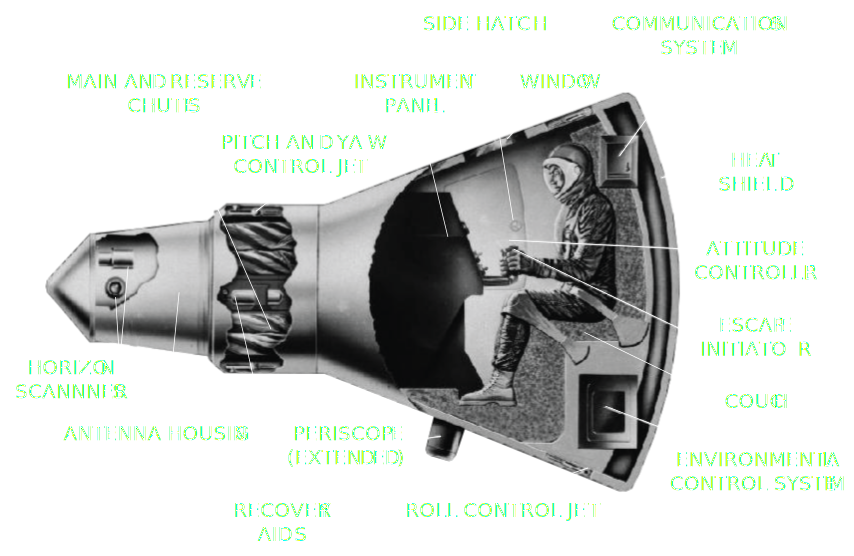
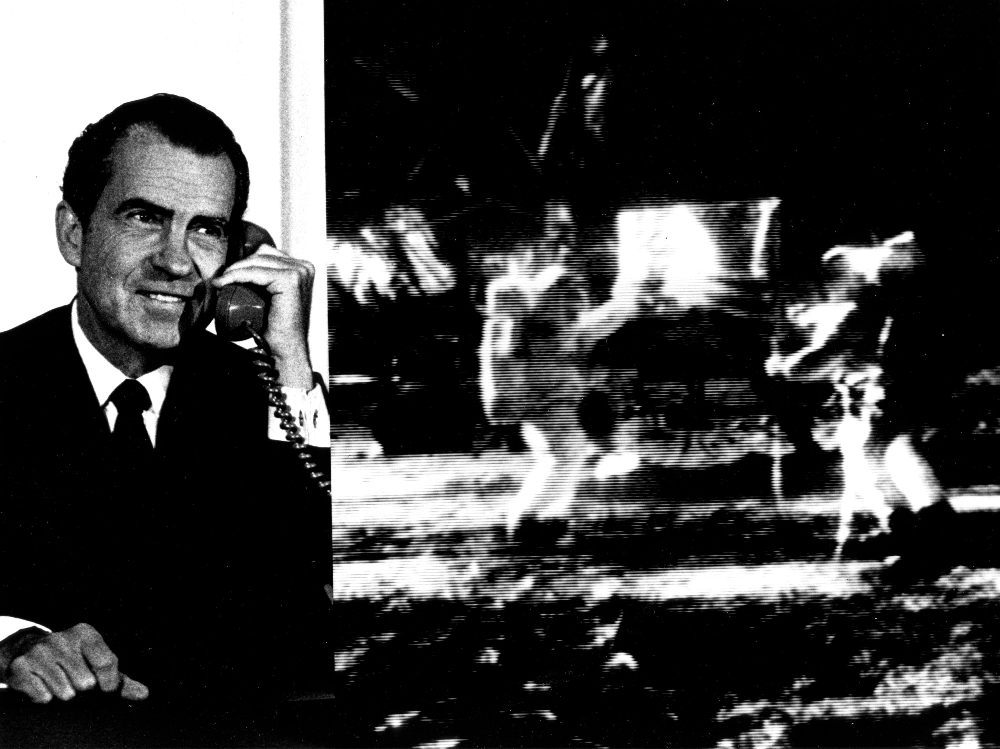

 GEMINI X AGENA
 MARINER 10
 SOYUZ TMA-18
 STS-79 ATLANTIS
 MARS GLOBAL SURVEYOR
 KOUNOTORI 5 H-II
KOUNOTORI 5 H-II
 VAN ALLEN PROBES
UNITED STATES
Edward H. White II

The SkyLab streaked the intergalactic spacecraft and the Titan. A mercury operated one planetary sputnik and the astronaut.
BALLISTIC CAPSULE


Nixon Calls the Moon
"For one priceless moment in the history of man, all of the people on this Earth are truly one, one in their pride in what you have done and one in our prayers that you will return safely to Earth."
"For one priceless moment in the history of man, all of the people on this Earth are truly one, one in their pride in what you have done and one in our prayers that you will return safely to Earth."

First American in Space
"Astronaut Alan Shepard photographed in flight by a 16mm movie camera inside the Freedom 7 spacecraft. Shepard is just about to raise the shield in front of his face during descent after opening of the main parachute."
"Astronaut Alan Shepard photographed in flight by a 16mm movie camera inside the Freedom 7 spacecraft. Shepard is just about to raise the shield in front of his face during descent after opening of the main parachute."

Gemini 6 and Gemini 7 Rendezvous
"This photograph taken on December 15, 1965 shows the Gemini 7 spacecraft as it was observed from the hatch window of the Gemini 6 spacecraft during rendezvous manuevers and station keeping at a distance of approximately 9 feet apart."
"This photograph taken on December 15, 1965 shows the Gemini 7 spacecraft as it was observed from the hatch window of the Gemini 6 spacecraft during rendezvous manuevers and station keeping at a distance of approximately 9 feet apart."
GEMINI PROGRAM
MERCURY PROGRAM
APOLLO PROGRAM